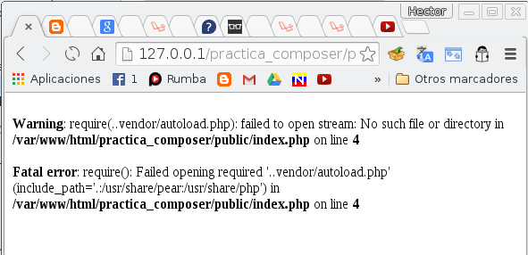

Estrategias, Librerias, Estandares
Algunos tips. Disciplina en sí misma.
Origen de las vulnerabilidades
Objetivo del atacante
Documentación de Plataforma o Lenguaje
Reutilización
Buenas Prácticas
Mejora indirecta
Calidad general del producto
Mejora Legibilidad (fácil de corregir)
Mantenible / Modificable
CÓDIGO COMPLEJO = DIFICL CORREGIR
Validar Entradas
filter_var(45, FILTER_VALIDATE_INT); # true
filter_var('bob@example.com', FILTER_VALIDATE_EMAIL); # true
filter_var('http://example.com', FILTER_VALIDATE_URL, FILTER_FLAG_PATH_REQUIRED); # false
Sanitizar Salidas
$a = 'joe@example.org';
$b = 'bogus - at - example dot org';
$c = '(bogus@example.org)';
filter_var($a, FILTER_SANITIZE_EMAIL); # 'joe@example.org'
filter_var($b, FILTER_SANITIZE_EMAIL); # false
filter_var($c, FILTER_SANITIZE_EMAIL); # 'bogus@example.org'
Contexto o Entorno
__DIR__)
file_exists())
Ejecutar Comandos Externos
exec($command);
system($command);
# Lo siguiente definitivamente NO
$command = $_POST['command'];
exec($command);
¿Como crear un archivo cuyo nombre sea parte de la entrada del usuario?
Sentencias Preparadas
$sentencia = $pdo->prepare("INSERT INTO CLIENT (name, age) VALUES (:name, :age)");
$sentencia->bindParam(':name', $nombre);
$sentencia->bindParam(':age', $edad);
$nombre = 'Jerry Smith';
$edad = 40;
$sentencia->execute();
$nombre = 'Beth Smith';
$edad = 38;
$sentencia->execute();
Esto pasa mas en C, los lenguajes de alto nivel lo controlan pero pueden tener bugs.
Ojo al usar extensiones de terceros en bajo nivel (se puede ejecutar código C en PHP, Python)
Excepciones
Es tedioso pero capturar la mayor cantidad posible
Premisa: Todo el Software esta Roto
try {
echo awesome_function(5) . "\n";
echo awesome_function(0) . "\n";
} catch (AnException $e) {
// alguna accion
} catch (AnotherException $e) {
// otra accion
} catch (Exception $e) {
// accion cuando no se que fallo
}
¿Que se muestra al usuario?
Excepciones
¿Que se muestra al usuario?
Ocultar errores no los ARREGLA
Loguear es un tema [mas complejo de lo que parece](https://www.youtube.com/watch?v=wUXamWPhtpE)
Restricciones Legales, Eticas
Encriptar datos importantes
No es necesario almacenar todo
¿Cual es la diferencia entre Encriptar vs Hash?
Código de alta calidad
Guías Relevantes
Estandares de Seguridad
Mitnick, K. D., & Simon, W. L. (2011). The art of deception: Controlling the human element of security. John Wiley & Sons.
Tori, C. (2008). Hacking ético.
Viega, J., & McGraw, G. R. (2001). Building secure software: how to avoid security problems the right way. Pearson Education.